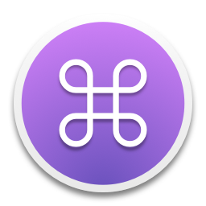

左右のコマンドキーを単体で押した時に、英数/かなを切り替える macOS アプリです。
Release archives are configured as Universal 2 binaries.
未署名アプリのため、右クリックから開いてアクセシビリティ権限を許可してください。
update.json is served from this GitHub Pages site.
update.json